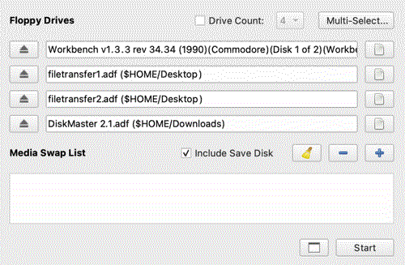

The Solana Vanishing Act
The Solana Vanishing Act
There are plenty of ways to transfer files between a modern computer and your Amiga 500. Some are very slow (serial cable), others are expensive (modern expansions on the CPU slot). There is an SDbox hardware that connects to the parallel port, which might be a good solution, but I haven't tested it yet and I heard about issues (especially with Kickstart 1.3). What most people have nowadays however is a GOTEK floppy emulator. Either replacing the internal floppy drive or connected externally as a secondary floppy drive. Transferring ADF files are a breeze, you just copy them to your USB stick and that's it. But what if you'd want to try stuff that's on Aminet, the Fred Fish disks or somewhere else? They usually come lha compressed or in executables. How do you transfer those?
I'm using FS-UAE under MacOS, but the principle is the same with WinUAE under Windows too.
Open your emulator (FS-UAE Launcher) and have a Workbench floppy image at hand.
Click the menu icon in the top left corner and open the ADF creator. Create two new standard ADF images. I named them filetransfer1.adf and filetransfer2.adf. Save them to a location that's easily accessible like that Desktop or find them in /Users/your-user/Documents/FS-UAE/Floppies
Configure your emulator to emulate your Amiga 500. Amiga Model: A500, 1.3 ROM.
Floppy Drive: Insert the Workbench 1.3 disk to drive 0 (first drive) and the empty ADFs you created to drive 1 and 2 (second and third drive).

On the Hard Drives tab browse for a folder that will contain the stuff you downloaded and want to put on the new ADF. Can be your Downloads folder or create a separate Amiga folder for this.
On the ROM tab select your Kickstart 1.3 ROM file. Configure the RAM settings to match your machine (or more if you want).
Click on the menu icon in the top left corner again, then select the Settings option.
In the new window, click on Advanced and type in the following configuration lines:
# Set the floppy drive speed to 8x floppy_drive_speed = 800 # To allow changes to be written to ADF files # Without this FS-UAE never saves to ADF files directly, it creates an overlay diff file instead writable_floppy_images = 1
Without the writeable_floppy_images=1 option FS-UAE will protect your ADFs and won't save your changes to the original file. It creates a Floppy overlay file in Documents/FS-UAE/Floppy Overlays for every disk instead. After adding this option it should work as you'd expect it to, and save your stuff properly.
Close the advanced settings, give a name to your configuration instead of "Unnamed Configuration" and click the save config button next to it.
Download the following stuff and place it in your shared folder (the one you configured in FS-UAE as an Amiga drive):
Optional (but will make life much easier):
You can add the Disk Master 2.1 ADF to the 4th floppy drive of the emulator.
Start the emulator. After it booted, open the Workbench 1.3 disk and a new Shell. In the shell, type the following commands:
cd amiga: // use your shared folder name dir lha // check that lha works copy lha df1: // copy the lha executable to your empty ADF
If you want, you can also drag the DM2 icon in Workbench from the Disk Master floppy to both your shared folder and the empty disk, so you'll always have a tool for copying and browsing files at hand.
If you want to transfer bigger files that won't fit on a single floppy disk, you can use the Splitter tool. It can be used to split larger files into floppy disk sizes, then join them together on the Amiga side. This is only useful if you either have an extra memory expansion in your Amiga 500 (so you can extract and join files in RAM) or if you have a hard drive.
Here is how to do it:
lha x splitter304a.lha // extract the splitter rename splitter splitter304a // rename the splitter folder to avoid conflict copy splitter304/splitter amiga: // copy the tool from it's folder to the shared volume copy splitter df1: // copy it to the filetransfer1.adf
Now let's try it on some larger file. I'm using the mui38usr.lha here as an example, which is a 1MB file:
splitter -h // gives you detailed help
splitter mui38usr.lha // will split the file to two 720kbyte chunks
splitter -s amiofsdc-dd muiusr38.lha // will split the file into two 840kbyte
// chunks (Amiga OFS Dir-Cache Double Density)
Joining the files is similarly easy. You just specify -j as join, then list the source files and in the end the destination file:
splitter -j muiusr38.lha.001 muiusr38.lha.002 muiusr38-joined.lha
After you copied the files to the filetransfer1 and filetransfer2 ADFs, you can quit the emulator, copy the ADFs to your GOTEK's USB stick and use them on your Amiga.